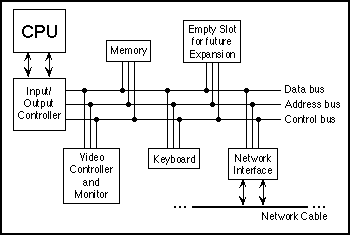

Section 1.2
Asynchronous Events: Polling Loops and Interrupts
The CPU spends almost all of its time fetching instructions from memory and executing them. However, the CPU and main memory are only two out of many components in a real computer system. A complete system contains other devices such as:
- A hard disk for storing programs and data files. (Note that main memory holds only a comparatively small amount of information, and holds it only as long as the power is turned on. A hard disk is necessary for permanent storage of larger amounts of information, but programs have to be loaded from disk into main memory before they can actually be executed.)
- A keyboard and mouse for user input.
- A monitor and printer which can be used to display the computer's output.
- A modem that allows the computer to communicate with other computers over telephone lines.
- A network interface that allows the computer to communicate with other computers that are connected to it on a network.
- A scanner that converts images into coded binary numbers that can be stored and manipulated on the computer.
The list of devices is entirely open ended, and computer systems are built so that they can easily be expanded by adding new devices. Somehow the CPU has to communicate with and control all these devices. The CPU can only do this by executing machine language instructions (which is all it can do, period). The way this works is that for each device in a system, there is a device driver, which consists of software that the CPU executes when it has to deal with the device. Installing a new device on a system generally has two steps: plugging the device physically into the computer, and installing the device driver software. Without the device driver, the actual physical device would be useless, since the CPU would not be able to communicate with it.
A computer system consisting of many devices is typically organized by connecting those devices to one or more busses. A bus is a set of wires that carry various sorts of information between the devices connected to those wires. The wires carry data, addresses, and control signals. An address directs the data to a particular device and perhaps to a particular register or location within that device. Control signals can be used, for example, by one device to alert another that data is available for it on the data bus. A fairly simple computer system might be organized like this:

Now, devices such as keyboard, mouse, and network interface can produce input that needs to be processed by the CPU. How does the CPU know that the data is there? One simple idea, which turns out to be not very satisfactory, is for the CPU to keep checking for incoming data over and over. Whenever it finds data, it processes it. This method is called polling, since the CPU polls the input devices continually to see whether they have any input data to report. Unfortunately, although polling is very simple, it is also very inefficient. The CPU can waste an awful lot of time just waiting for input.
To avoid this inefficiency, interrupts are often used instead of polling. An interrupt is a signal sent by another device to the CPU. The CPU responds to an interrupt signal by putting aside whatever it is doing in order to respond to the interrupt. Once it has handled the interrupt, it returns to what it was doing before the interrupt occurred. For example, when you press a key on your computer keyboard, a keyboard interrupt is sent to the CPU. The CPU responds to this signal by interrupting what it is doing, reading the key that you pressed, processing it, and then returning to the task it was performing before you pressed the key.
Again, you should understand that this is a purely mechanical process: A device signals an interrupt simply by turning on a wire. The CPU is built so that when that wire is turned on, the CPU saves enough information about what it is currently doing so that it can return to the same state later. This information consists of the contents of important internal registers such as the program counter. Then the CPU jumps to some predetermined memory location and begins executing the instructions stored there. Those instructions make up an interrupt handler that does the processing necessary to respond to the interrupt. (This interrupt handler is part of the device driver software for the device that signalled the interrupt.) At the end of the interrupt handler is an instruction that tells the CPU to jump back to what it was doing; it does that by restoring its previously saved state.
Interrupts allow the CPU to deal with asynchronous events. In the regular fetch-and-execute cycle, things happen in a predetermined order; everything that happens is "synchronized" with everything else. Interrupts make it possible for the CPU to deal efficiently with events that happen "asynchronously," that is, at unpredictable times.
As another example of how interrupts are used, consider what happens when the CPU needs to access data that is stored on the hard disk. The CPU can access data directly only if it is in main memory. Data on the disk has to be copied into memory before it can be accessed. Unfortunately, on the scale of speed at which the CPU operates, the disk drive is extremely slow. When the CPU needs data from the disk, it sends a signal to the disk drive telling it to locate the data and get it ready. (This signal is sent synchronously, under the control of a regular program.) Then, instead of just waiting the long and unpredictalble amount of time that the disk drive will take to do this, the CPU goes on with some other task. When the disk drive has the data ready, it sends an interrupt signal to the CPU. The interrupt handler can then read the requested data.
Now, you might have noticed that all this only makes sense if the CPU actually has several tasks to perform. If it has nothing better to do, it might as well spend its time polling for input or waiting for disk drive operations to complete. All modern computers use multitasking to perform several tasks at once. Some computers can be used by several people at once. Since the CPU is so fast, it can quickly switch its attention from one user to another, devoting a fraction of a second to each user in turn. This application of multitasking is called timesharing. But a modern personal computer with just a single user also uses multitasking. For example, the user might be typing a paper while a clock is continuously displaying the time and a file is being downloaded over the network.
Each of the individual tasks that the CPU is working on is called a thread. (Or a process; there are technical differences between threads and processes, but they are not important here.) At any given time, only one thread can actually be executed by a CPU. The CPU will continue running the same thread until one of several things happens:
- The thread might voluntarily yield control, to give other threads a chance to run.
- The thread might have to wait for some asynchronous event to occur. For example, the thread might request some data from the disk drive, or it might wait for the user to press a key. While it is waiting, the thread is said to be blocked, and other threads have a chance to run. When the event occurs, an interrupt will "wake up" the thread so that it can continue running.
- The thread might use up its allotted slice of time and be suspended to allow other threads to run. Not all computers can "forcibly" suspend a thread in this way; those that can are said to use preemptive multitasking. To do preemptive multitasking, a computer needs a special timer device that generates an interrupt at regular intervals, such as 100 times per second. When a timer interrupt occurs, the CPU has a chance to switch from one thread to another, whether the thread that is currently running likes it or not.
Ordinary users, and indeed ordinary programmers, have no need to deal with interrupts and interrupt handlers. They can concentrate on the different tasks or threads that they want the computer to perform; the details of how the computer manages to get all those tasks done are not important to them. In fact, most users, and many programmers, can ignore threads and multitasking altogether. However, threads have become increasingly important as computers have become more powerful and as they have begun to make more use of multitasking. Indeed, threads are built into the Java programming language as a fundamental programming concept.
Just as important in Java and in modern programming in general is the basic concept of asynchronous events. While programmers don't actually deal with interrupts directly, they do often find themselves writing event handlers, which, like interrupt handlers, are called asynchronously when specified events occur. Such "event-driven programming" has a very different feel from the more traditional straight-through, synchronous programming. We will begin with the more traditional type of programming, which is still used for programming individual tasks, but we will return to threads and events later in the text.
By the way, the software that does all the interrupt handling and the communication with the user and with hardware devices is called the operating system. The operating system is the basic, essential software without which a computer would not be able to function. Other programs, such as word processors and World Wide Web browsers, are dependent upon the operating system. Common operating systems include Linux, DOS, Windows 2000, Windows XP, and the Macintosh OS.